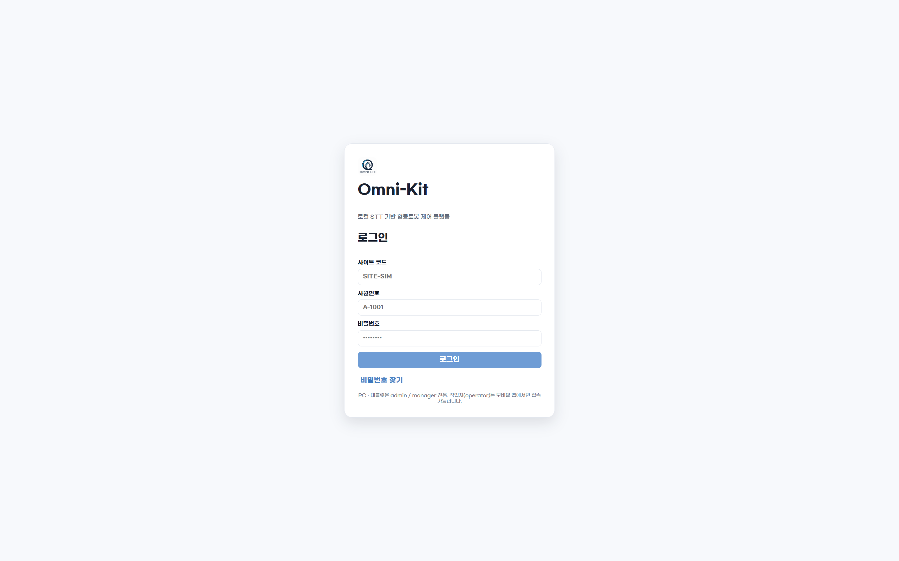

Overview
문제 정의
기존 산업용 협동로봇은 펜던트 옆에서만 조작·확인이 가능하고, 누가 어떤 단말에서 접근하는지 관리가 어렵습니다. Omni-Kit은 로봇 상태를 웹/모바일로 끌어올리고, 모든 단말을 사이트별 WebAuthn 화이트리스트로 잠그는 운영 콘솔을 만들었습니다.
Overview
기존 산업용 협동로봇은 펜던트 옆에서만 조작·확인이 가능하고, 누가 어떤 단말에서 접근하는지 관리가 어렵습니다. Omni-Kit은 로봇 상태를 웹/모바일로 끌어올리고, 모든 단말을 사이트별 WebAuthn 화이트리스트로 잠그는 운영 콘솔을 만들었습니다.
Core Value
React 19 기반 콘솔에서 3D URDF 디지털 트윈으로 실 로봇과 동일한 자세를 확인하고, MQTT/WebSocket으로 명령/상태가 양방향 흐릅니다. Spring Boot 백엔드가 WebAuthn 등록·인증·세션 무효화·디바이스 takeover까지 운영 보안을 책임집니다.
Highlights
Yubico WebAuthn 서버 라이브러리로 등록·어설션을 처리하고, 디바이스를 PENDING/APPROVED/BLOCKED로 관리합니다. 첫 admin은 부트스트랩 자동 승인됩니다.
@react-three/fiber + urdf-loader로 UR5 모델을 렌더링하고, MQTT를 통해 들어오는 관절/TCP pose를 WebSocket으로 받아 화면에 즉시 반영합니다.
단일 세션 정책으로 다른 기기에서 takeover되면 30초 폴링과 visibilitychange로 즉시 감지해 로그아웃합니다. AccessTokenDenylist로 토큰도 즉시 무효화됩니다.
OS keychain 분실로 WebAuthn 어설션이 막혔을 때 자가 reset-credential, 같은 사이트 사용자 takeover-reset, PENDING 승인 재요청까지 흐름을 닫았습니다.
Screen Explorer
새로 정리한 스크린샷을 실제 탭 흐름 기준으로 묶어, 인증부터 실시간 제어와 관리자 보안 화면까지 확인할 수 있습니다.

사이트 코드와 사번으로 로그인한 뒤 저장된 패스키를 선택하고, WebAuthn 디바이스 승인 상태를 확인하는 진입 흐름입니다.
Architecture
React 콘솔과 Spring Boot 백엔드가 REST/STOMP로 통신하고, 백엔드는 Spring Integration MQTT로 로봇 워크스페이스와 명령/상태 메시지를 주고받습니다.
STT는 web/sensevoice가 faster-whisper large-v3-turbo로 EC2 CPU(int8)에서 서빙하고, 음성 발화·LLM 응답은 로봇이 진실원천이 되어 evt/conversation MQTT → WS llm.conversation.appended로 콘솔에 도착합니다.
Tech Stack
관리자 콘솔(데스크톱)과 operator 모바일을 같은 모노레포에서 운영합니다. 3D URDF 뷰어는 @react-three/fiber + urdf-loader, WebAuthn 클라이언트는 @simplewebauthn/browser로 처리합니다.
JWT + WebAuthn + 디바이스 가드 3중 보안과, ROS 2 워크스페이스와 통신하는 MQTT 이벤트 라우터를 같은 백엔드에 묶었습니다. JPA + Redis로 세션·쿨다운을 관리합니다.
omni_kit ROS 2 워크스페이스가 UR5 RTDE 드라이버와 OnRobot 2FG7 Modbus 그리퍼를 제어하고, web/sensevoice가 EC2 CPU(int8) Whisper 추론을 서빙합니다.
My Contribution
백엔드 인증·세션·디바이스 가드와 프론트엔드 페이지 구조(콘솔 셸·실시간 제어·관리자 화면·로그인 흐름)를 함께 맡았습니다.
Spring Boot의 WebAuthnService에서 Yubico RelyingParty 기반 등록 옵션·검증, 어설션, 첫 admin 부트스트랩 자동 승인까지 구현했습니다. 등록 시 admin에게 PENDING 알림을 발사합니다.
AuthSessionGuard 인터셉터에서 WebAuthn credential → 사이트 → APPROVED → 디바이스 타입 순으로 검증하고, AccessTokenDenylist로 강제 만료 시 토큰을 즉시 무효화했습니다.
AdminPages의 ClientDevicesPage에서 PENDING/APPROVED/BLOCKED 상태 전환, 알림 링크의 사원번호 prefill, 사이트 멤버/그룹/그리퍼 관리까지 화면을 구현했습니다.
AppShell 사이드바·collapsed 상태·세션 takeover 폴링(30s + visibilitychange), routing.tsx의 PublicOnly/Protected/PendingApproval/DesktopOnly 라우트 가드를 작성했습니다.
Troubleshooting
PendingApprovalRoute에서 디바이스가 APPROVED로 갱신되자마자 /dashboard로 보내면 WebAuthn 어설션 단계가 trigger되지 않는 race가 있었습니다. 토큰의 webauthnCredentialId 유무까지 함께 확인해 라우트가 한 단계 더 머무르도록 가드를 고쳤습니다.
단일 세션 정책 하에서 다른 기기 로그인 시 기존 탭이 살아 있으면 사용자가 모릅니다. AppShell에서 /auth/me 30초 폴링 + visibilitychange 즉시 호출을 결합해 AUTH_031을 받으면 인터셉터가 /login?takeover=1로 보내도록 닫았습니다.
자가 reset-credential과 같은 사이트 사용자 takeover-reset이 admin 알림을 스팸으로 만들 수 있어, Redis로 사용자/사이트별 60초 cooldown을 적용했습니다. takeover 시 기존 deviceType·deviceName은 보존해 식별 정보가 사라지지 않도록 처리했습니다.
시연 환경의 우분투 PC는 OS platform authenticator가 없어 Chrome WebAuthn 흐름이 막힙니다. AuthSessionGuard와 라우트 가드에 User-Agent 기반 우회를 두되, Android의 "Linux" 토큰은 명시적으로 제외해 operator MOBILE 정책이 깨지지 않게 했습니다.
실시간 제어에서 jog 버튼은 80ms 간격으로 연속 발사되는데, 실패 시 매 tick 토스트가 떠 화면이 가려졌습니다. 마지막 에러 토스트 시점을 기록해 3초 이내 재표시를 막고, 성공 시 카운터를 리셋하도록 정리했습니다.
Summary
SSAFY 14기 자율 프로젝트(S14P31S303) — React 19 + Spring Boot 3 + ROS 2 워크스페이스를 묶은 협동로봇 운영 콘솔입니다. WebAuthn 디바이스 화이트리스트, 단일 세션 강제, 3D URDF 디지털 트윈을 한 흐름에 연결했습니다.